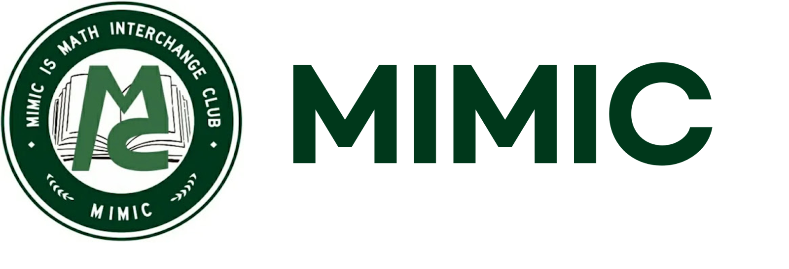

MIMICMimic Is Math Interchanging Club · 성균관대학교 수학과 학술동아리
MIMIC은 성균관대학교 유일의 수학 학술 동아리로, 수학을 좋아하는 학생들이 모여 교류하는 모임입니다. 2018년 창설 이후 수학 세미나를 중심으로 튜터링, 스터디, 친목 활동을 이어오며 많은 학우들과 수학의 즐거움을 나누고 있습니다. MCUS는 MIMIC이 기획하고 운영하는 학술회입니다.
Mathematics Conference for Undergraduate Students
수학 전공 학부생들의 발표와 연구자 강연을 통해 서로의 관심 주제를 나누고, 다양한 수학적 관점을 접할 수 있도록 마련한 학부생 대상 학술회입니다.
교실 밖에서 수학을 이야기할 자리가 필요하다는 생각에서 시작했습니다. MCUS는 학부생이 직접 발표하고, 연구자의 강연을 듣고, 서로의 관심사를 나누는 학술회입니다.
학부생이 관심 있는 주제를 직접 정리해 발표합니다. 정규 강연부터 짧은 Lightning Talk까지, 공부한 수학을 말로 풀어내는 경험을 쌓습니다.
대학원생과 연구자가 지금 다루고 있는 주제를 학부생의 눈높이에서 소개합니다. 교과서 너머의 수학이 어떻게 이어지는지 직접 들을 수 있습니다.
매듭이론과 조합론, 해석학에서 기계학습과 수리물리까지. 서로 다른 관심사를 가진 사람들이 한자리에서 질문하고 토론합니다.
수학에 관심 있는 학부생이라면 누구나 참여할 수 있습니다. 지금까지 참가비 없이 식사를 함께 나누며 운영해 왔습니다.
각 연도의 일정, 연사, 초록, 사진을 확인할 수 있습니다.

MIMIC은 성균관대학교 유일의 수학 학술 동아리로, 수학을 좋아하는 학생들이 모여 교류하는 모임입니다. 2018년 창설 이후 수학 세미나를 중심으로 튜터링, 스터디, 친목 활동을 이어오며 많은 학우들과 수학의 즐거움을 나누고 있습니다. MCUS는 MIMIC이 기획하고 운영하는 학술회입니다.
MCUS 2027부터 성균관대학교 수학과가 MIMIC과 함께 학술회를 주최합니다. 학부생들이 수학을 깊이 있게 나눌 수 있는 자리가 더 넓게 이어질 수 있도록 함께합니다.